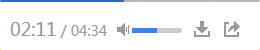

私人频道
- 樱花的眼泪
- 《樱花的眼泪》
- 阿兰

歌曲名:樱花的眼泪
歌手:阿兰
专辑:2011年2月新歌速递2
樱花的眼泪
PAL
那一年那个月那一日那个樱花树下
他吻她直到声音都沙哑
美好记忆来去匆匆静止不喧哗
她失去了生命将他无言的留下
刻骨铭心的爱不用事实证明
有感觉心就可以完全的体会
刻骨铭心的痛不用语言表达
他她 她和她的他总会有落差
花在风中飘落
一片一片拼凑不成花朵
心在风中飘落
零零碎碎到下个世纪末
花，花在风中飘落
一片一片拼凑不成花朵
心，心在风中飘落
零零碎碎到下个世纪末
花，花在风中飘落
一片一片拼凑不成花朵
心，心在风中飘落
零零碎碎到下个世纪末
初春的阳光在他的身上慢慢的爬
仿佛又看到那张脸如此纯情卡哇
没了她他的世界无情的倒塌
她是否在另一个世界想着他
那一年那个月那一日那个樱花树下
如果他不曾认识她她不曾爱过他
这场悲剧是不是就不会萌芽
想着想着他又想起女孩可爱的发卡
他如果是牛郎，她如果是织女
每年会有那么一个七月七
可以诉说可以抽泣可以让他看到她的心
极淡的空气里流动着一种无处可置的心情
樱花飘落暖暖的温馨今天却冷的像冰
你知道我的心
花在风中飘落
一片一片拼凑不成花朵
心在风中飘落
零零碎碎到下个世纪末
花，花在风中飘落
一片一片拼凑不成花朵
心，心在风中飘落
零零碎碎到下个世纪末
花，花在风中飘落
一片一片拼凑不成花朵
心，心在风中飘落
零零碎碎到下个世纪末
在很久很久以前
留在你身边的人是我
留在我心底的人是你
留在我们周围的是回忆
留在这个城市是我们过去的足迹
我们过去的甜蜜
过去那样爱着我的你
无论我们怎么努力
仍有些是我们做不到的
想一个人不难
难的是如此想你却不能贴近你
我会的
我会在另一个世界
看到你的笑脸
听到你的思念
闻到你的呼吸
这是我爱的宿命
我逃不过你，我离不开你
我逃不过你，我离不开你